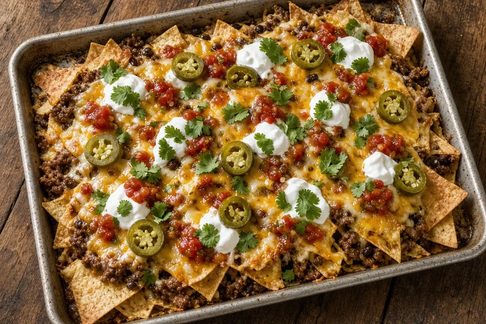

Sheet-Pan Beef Nacho Bake
Ground beef browned with homemade taco spices, layered on a sheet pan with chips, black beans, and two cheeses, baked hot at 425°F and loaded with toppings. Dinner 30 minutes after you walk in.

4 servings
By
Yield: 4 servings
Prep:
Cook:
Total:
Difficulty: Easy
Ingredients
- 1 1/2 lb ground beef, 80/20
- 1 small onion, diced
- 1 Tbsp chili powder
- 2 tsp ground cumin
- 1 tsp smoked paprika
- 1 tsp garlic powder
- 1 tsp dried oregano
- 1 tsp kosher salt
- 1/4 tsp cayenne pepper
- 1/2 cup beef bone broth
- 1 (13 oz) bag tortilla chips
- 1 (15 oz) can black beans, drained and rinsed
- 8 oz cheddar cheese, shredded
- 8 oz Monterey Jack cheese, shredded
- 1 cup sour cream
- 1/2 cup pickled jalapeños
- 1 cup salsa
- 1/4 cup fresh cilantro, chopped
- 1 lime, cut into wedges
Instructions
- Heat the oven to 425°F, about 10 minutes. Line a rimmed sheet pan with foil or parchment.
- While it heats, brown the ground beef and onion in a 12-inch HexClad skillet over medium-high heat, breaking up the beef, 7 minutes. Leave the fat in for flavor unless there is a lot pooled.
- Stir in the chili powder, cumin, smoked paprika, garlic powder, oregano, salt, and cayenne and toast 1 minute. Add the beef bone broth and simmer until it is saucy and mostly absorbed, 3 minutes.
- Spread half the tortilla chips on the sheet pan. Top with half the beef, half the black beans, and half the cheddar and Monterey Jack. Repeat with the rest of the chips, beef, beans, and cheese.
- Bake 9 minutes, until the cheese is melted and bubbling at the edges.
- Top with the sour cream, jalapeños, salsa, and cilantro, and serve with the lime wedges right off the pan.
Notes: Thick restaurant-style chips hold up best under the beef. The taco beef can be browned a day ahead and reheated in the skillet; it also freezes well. Add diced avocado or pickled red onion if you have them.